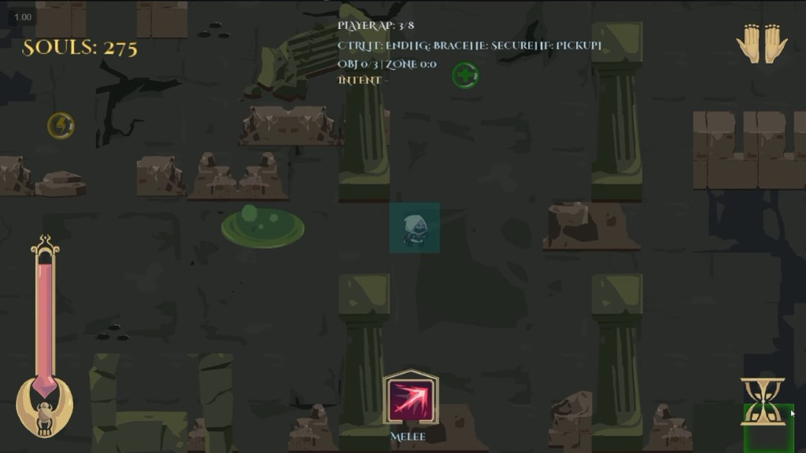
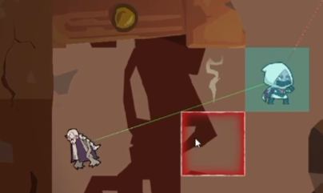
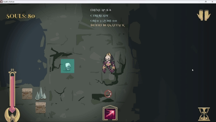
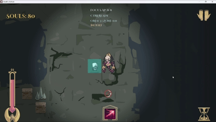
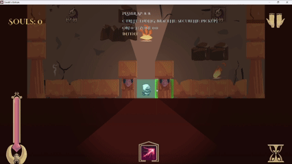
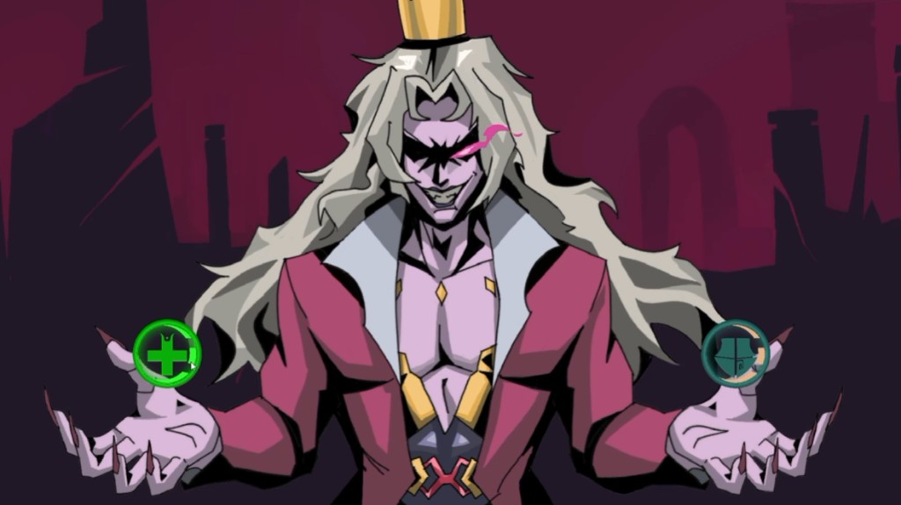

2D top-down grid tactics on our own engine. I designed every shipped mechanic and wrote the Lua that runs them.
Turn-based combat on a grid. Spend action points to move, strike, or guard, then the enemies answer. Clear the room, take a heal or a permanent boost, and step through the portal.
This and Hellmaker are one Year 2 project across two pages, split by what I did: this is the game and the design, that one is the engine and the editor tooling underneath it.
I designed every shipped mechanic, wrote the Lua behind them, set the level flow, and integrated maps, assets, UI, SFX, VFX, and BGM so that the game actually ran. Art and music were produced by others. Some tile maps and the boss-room layout had help.
A turn has eight action points and one pool to pay for everything. Moving, attacking, and guarding all draw on it, and that single decision is the game. Every tile you walk is a hit you do not land. Split movement and actions into separate budgets, as plenty of tactics games do, and positioning becomes free — you walk wherever you like and then do your damage, and the grid is scenery you cross on the way to the interesting part. Sharing one pool makes the floor cost something.
There is one unit, not a squad, and that constraint is why the pool has to be tight. None of the usual tactics levers are available — no flanking, no overwatch net, no synergy between characters — so every decision has to come out of one figure on a grid. A squad game can afford a generous action economy because the interaction between units carries the depth. A single unit cannot, so the pool had to be tight enough to force a choice. Where exactly that line sat was not something I got right by reasoning about it, and the section on playtests below is mostly the story of finding it.
Everything else presses on that same pool from a different direction. Ranged costs double melee, so reach is bought with output. Slow tiles cost two to enter, so terrain taxes the same currency as attacking. The shield is cheap in points and expensive in freedom. None of these are separate systems; they are all the same question asked again with different framing, which is what keeps a small verb set from running out of decisions by room three.
Eight points per turn, and you may stop early.
| Action | Cost | Condition |
|---|---|---|
| Move | 1 / tile | Once per turn: highlight a path, click again to commit |
| Melee | 1 | Adjacent |
| Ranged | 2 | Line of sight, drawn green or red |
| Shield | 1 | Eats one hit, drops if you move, not two turns running |
| Slow tile | 2 to enter | Terrain, not an action |
Those five rows produce the whole decision space. A turn is a way of spending eight:
| Turn | Spend | Buys |
|---|---|---|
| Stand and swing | 8 melee | Maximum output, no repositioning |
| Close and commit | 4 tiles + 4 melee | Half the output to reach the target |
| Hold the line | 4 ranged | Half the hits, at any distance you can see |
| Reposition and poke | 6 tiles + 1 ranged | Position now, damage later |
| Guard and swing | Shield + 7 melee | One hit absorbed, but you are rooted |
Melee lands twice the hits per point that ranged does, so the weapon swap is not a skin, it is a rate. Choosing range means choosing to do half the damage in exchange for the enemy spending its turn walking toward you, which against a scorpion is a trade and against a stationary tome is simply a loss of tempo. That is the weapon swap earning its place: the right answer changes per room rather than per player preference.
The shield is the clearest example of a cost that is not its price. One point is nothing out of eight. What it actually costs is your movement, since it drops the moment you step, and your next turn, since it cannot run twice in a row. Priced purely in AP it would be an obvious buy every single turn; priced in mobility and tempo it is a read on whether you are about to be hit.
Damage is Strength minus Defense with a floor of one, so nothing in the game is ever immune to anything. A wall of armour slows you down rather than stopping you, which keeps a bad matchup expensive instead of unwinnable.
Pickups sit on the grid rather than in a menu — heal, ATK, and AP orbs, all of which cost movement to reach. The AP orb is the neatest of them, because collecting it means spending points to gain points, and the detour only pays if the path is short enough. Souls drop from kills and track score.

Three shipped types, and each one attacks a different part of your positioning rather than a different part of your health bar.
| Enemy | Behaviour | Punishes | Answer |
|---|---|---|---|
| Scorpion | Chases, melees when adjacent | Standing close | Distance, and making it spend its turn walking |
| Tome | Static, fires on straight line of sight | Standing in a line | Break the line; range does not help |
| Slime | Collapses, skips a turn, comes back | Spending points on it | Leave it alone; it does not block the portal |
The slime is the one I am happiest with. It is not a threat, it is a temptation. Every point spent killing it is a point not spent on the room, it returns anyway, and it never stands between you and the exit — so the correct play is usually to walk past something that is actively attacking you. That is a harder lesson to teach than “kill the dangerous one”, and it is the one that turns a clear-the-room game into a target-priority game.
Souls cut against it, which is worth admitting. They track score and score rewards kills, so the slime is the one thing the scoreboard wants you to take and the tactics want you to walk past. It is a small contradiction and nobody tripped over it in testing, but it is the first place I would look if I revisited the scoring.
Between the three, the questions do not overlap. Scorpions ask how close you are, tomes ask what you are lined up with, and slimes ask what is worth your points. Three behaviours is a small roster, so they had to test different things or the rooms would all read the same.
The Lich in Layer 1 Room 5 is a two-phase fight, beam then smash, sharing the room with scorpions and a tome. I designed the encounter; the room layout had help.


I set the flow: a tutorial, five Layer 1 rooms with the Lich at the fifth, then two Layer 2 rooms. Enemy counts, traps, and pickups escalate across them, so later rooms are written assuming the verbs are already known.
The reward is the only permanent decision in the run, and it is deliberately awkward. A full heal solves the room you just survived; Strength or Defense solves every room after it. Taking the heal is an admission that you will not reach the end at current health, and taking the stat is a bet that you will. Because it lands immediately after a fight, the player is asked to choose while the damage they just took is still the most recent thing on screen, which is exactly when the safe option is most tempting and least correct.
Not every room clears by killing everything. Some resolve by securing a node or winning zone control, which changes what the eight points are for — the same budget now buys presence instead of damage, and the slime's whole argument gets louder.
The tutorial always runs first and introduces one verb at a time: move, then attack and line of sight, then the weapon swap, then what actually clears a room, then the shield, then souls and special tiles. Later rooms combine what the earlier ones taught rather than adding new rules.
The ordering is the design. Movement comes before attacking because the AP pool means nothing until you have felt something else compete for it. The weapon swap is only introduced after line of sight exists, since the choice between melee and ranged is meaningless before you know what can see you. The shield is in that sequence because testing put it there, and late in it because it is a reaction — you cannot teach a reaction to someone who has not yet been punished.

I wrote the Lua state machines behind all of it: player combat, enemies, HUD, pause, dialogue, pickups, rewards, and the portal. I hooked YAML scenes and tile maps into Hellmaker, connected the UI to that flow, and wired audio and effects so that attacks, rooms, and menus actually played.
Integration is the part that does not show up in a feature list and decides whether a project ships. Art, music, and effects were produced by other people; none of it is in the game until something calls it at the right moment, and on a nine-person team that seam is where the schedule usually goes. Being the person holding it is also how I ended up with the clearest picture of what the build actually did, which is why the balance passes landed with me.
I authored the GDD and the gameplay wiki, and presented gameplay at reviews.

The complaint that mattered was pace. Testers found combat slow and came away frustrated rather than challenged, and separately could not work out what the shield was for. I ran most of the number passes that followed.
What I changed, and why:
The pace notes were the useful ones. I had been designing the budget as though scarcity were the same thing as tension, and it is not — scarcity produces tension right up to the point where it starts producing obedience.
Same close as Hellmaker: final milestone an A, every must-have shipped, not every want-to-have. This page is the game half of that result. The condemn and spare endings are the clearest cut — a team idea everybody liked, dropped because the combat loop was the part that had to work. Stacking a branching ending on a loop still being tuned would have been two unfinished things. What shipped is the combat loop.
The design lesson is the action point one, and it is not that I picked a bad number. I had been treating scarcity and tension as the same property. A tight budget does create pressure, but past a point it stops offering a choice and starts issuing an instruction, and from inside the design those two feel identical. I could have argued confidently for the smaller pool right up until I watched somebody play with it. Reasoning carefully about a constraint is not a substitute for putting it in front of a stranger.
That is the same shape as the engine half, which is probably not a coincidence. On Hellmaker the lesson was that the gap between forming an assumption and having it checked was too long. Here the assumption was mine, about my own system, and it still took someone else playing it to close. One project, two pages, one problem: how long you wait before you find out you were wrong.
Engine Hellmaker — the runtime and the editor tooling I built underneath this.
Questions lin.x@digipen.edu · LinkedIn